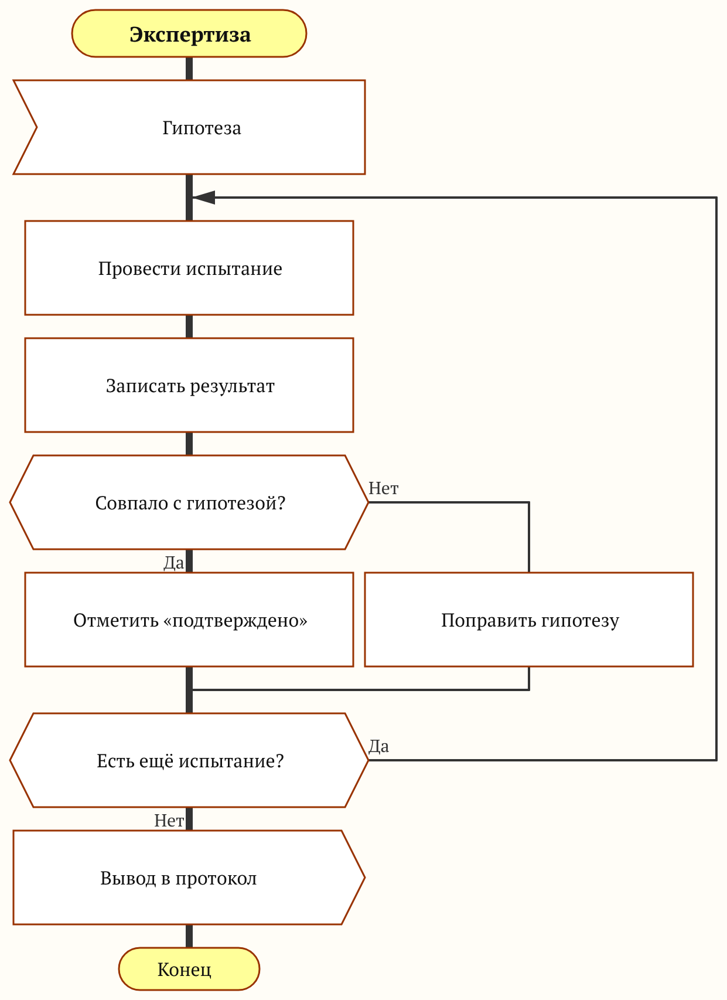
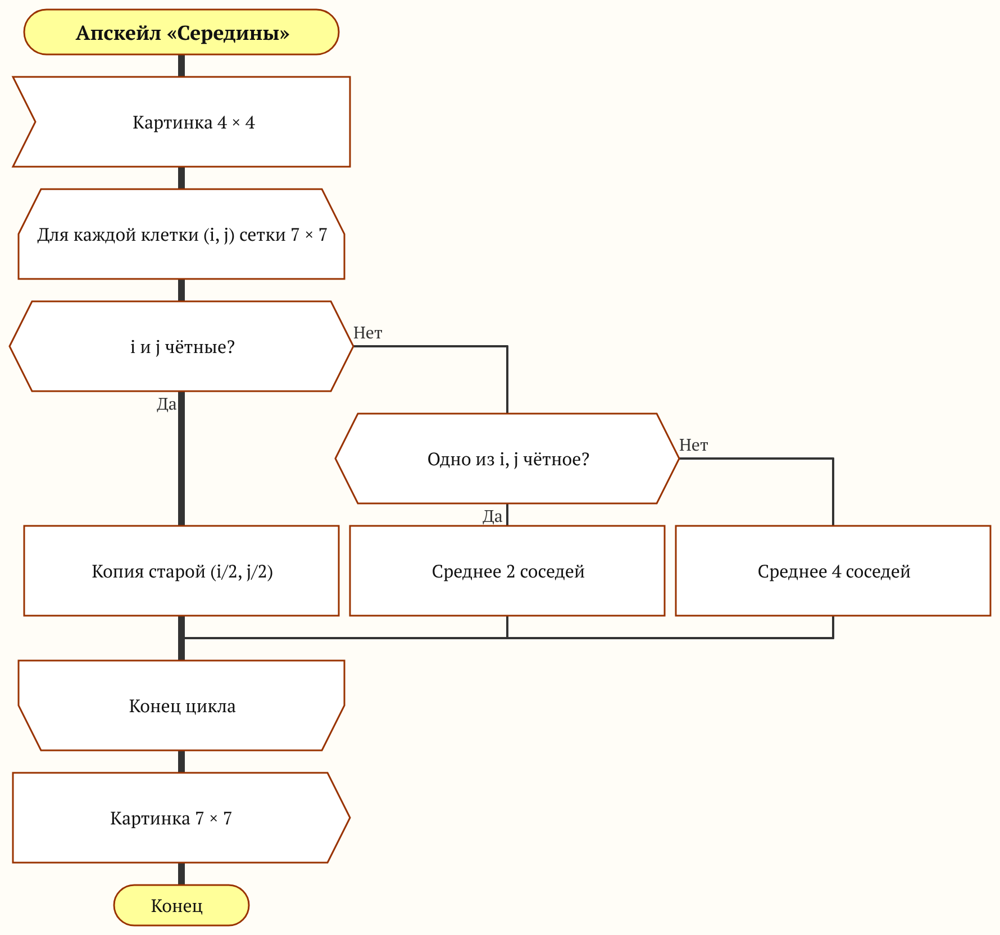

ДРАКОН-схема — как действовать: главная «Экспертиза» и вставка «Апскейл». Конспект ДРАКОН-ГРАФ — что запомнить: жёлтое — запомни, белое — разберись.
Главная схема · по ней идёт весь урок

Вставка · испытание 2: 4 × 4 → 7 × 7

ДРАКОН — В. Д. Паронджанов; виджет схем — С. Митькин. ДРАКОН-ГРАФ: язык ГРАФ — В. Д. Паронджанов, Г. А. Гуленков; расширенная версия — С. Н. Веснин.